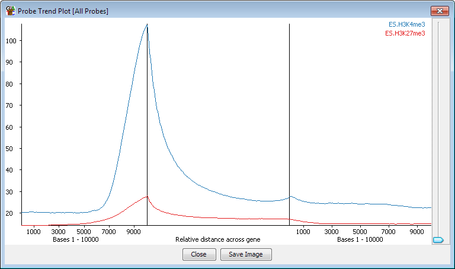
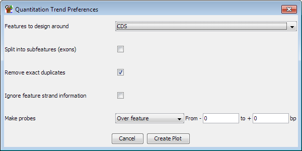

The quantitation trend plot is related to the probe trend plot in that it generates a profile over a set of genomic regions to look for trends which may not be apparent from looking at individual instances.
The quantitation trend plot starts from a set of quantitated probes and then uses the values in these probes to generate a profile around a set of features. Any probes which map to the region used for the plot are averaged to generate an overall picture of the quantitation around the features. The probe trend plot does something similar based on probe density, but the quantitation trend plot can use more complex measures (methylation percentages for example) to achieve the same effect.

